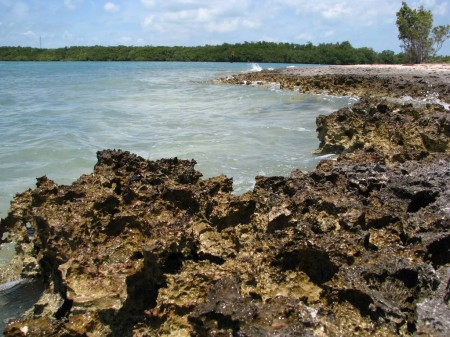
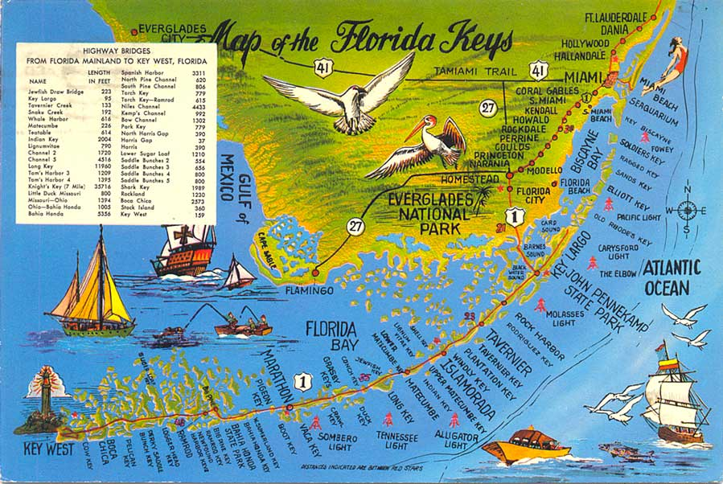
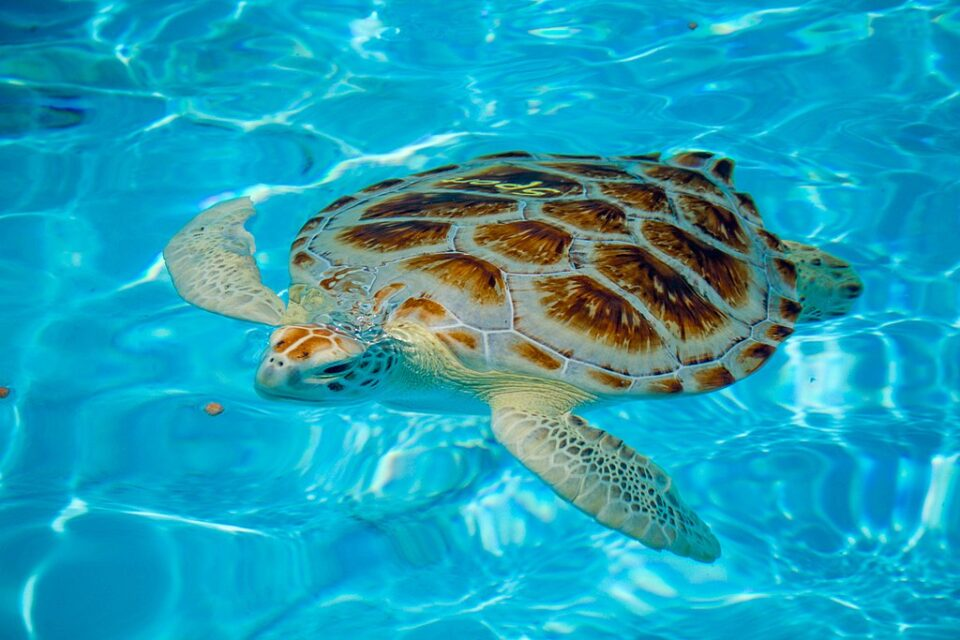

This is what the Florida keys look like
A photo gallery

This bridge stretches seven miles acrossthe Florida Keys and connects the islands. While on top of this bridge you can see water stretching for miles in every direction and sites you would never see anywhere else.

The beach is covered in limestone in a beautiful view is just 1 thing you might see on this trip

This amazing seaside image represents the beauty and concept of the Marine Keys and Florida.

This is the Marine Keys.This is the entirety of it and the stretch of the period.

This beautiful lighthouse is something you will never see anywhere else.Is a great place to visit and just just see it overall. You might not see it on your trip but it is a beautifulpicture and again can show the beauty of the keys

You will learn about marine biology on this trip.This is one of the animals you might even get to swim with a Sea turtle is one of the most beautiful and elegant creatures in the water.